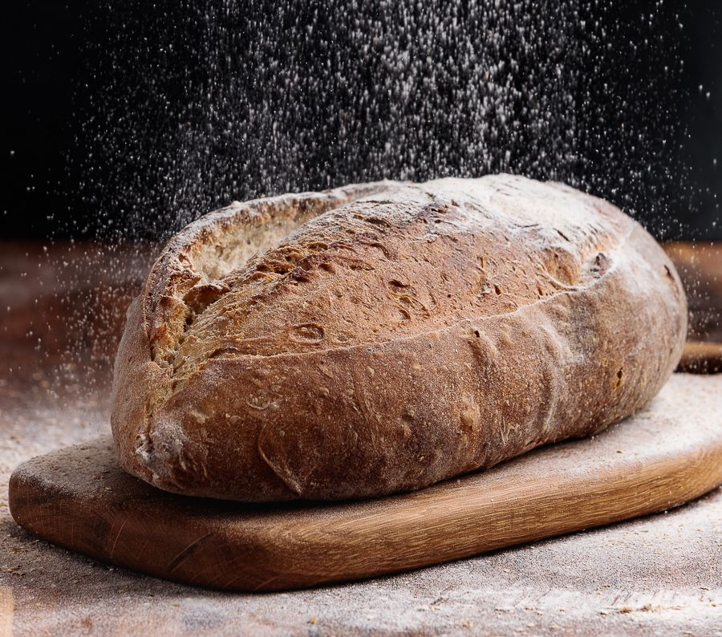

Бородинский (на закваске)
Бородинский (на закваске)
- Ржаная цельнозерновая мука (далее ц/з)
- Пшеничная ц/з мука
- Вода
- Мёд
- Солод ржаной
- Кориандр
- Тмин
- Соль
Деревенский (на закваске)
- Ржаная обдирная мука
- Пшеничная высшего сорта (далее в/с)
- Пшеничная ц/з
- Гречневая мука
- 5. Вода
- Солод ржаной
- Мед (в небольших количествах)
- Соль
Фермерский (закваска+дрожжи)
- Ржаная обдирная мука
- Пшеничная мука в/с
- Вода
- Солод ржаной
- Соль
Финский с сухофруктами (на закваске)
- Ржаная ц/з мука
- Вода
- Семечки подсолнечника
- Изюм
- Чернослив
- Соль
Пшеничный со льном (на закваске)
- Пшеничная мука ц/з
- Пшеничная мука в/с
- Вода
- Семена льна
- Соль

Картофельный (дрожжевой)
- Пшеничная мука в/с
- Пшеничная мука ц/з
- Молоко
- Картофельное пюре
- Сливочное масло
- Соль
- Дрожжи
Пшеничный хлеб ( на закваске)
- Пшеничная мука в/с
- Мука твердых сортов пшеницы
- Пшеничная мука ц/з
- Вода
- Оливковое масло
- Соль
Багет (на закваске/на пивной опаре)
- Пшеничная мука ц/з
- Пшеничная мука в/с
- Вода /Пиво
- Закваска/Дрожжи
- Соль
Гречневый с черносливом/луком (на закваске)
- Пшеничная мука ц/з
- Пшеничная мука в/с
- Мука ржаная ц/з
- Мука гречневая
- Вода
- Чернослив/Лук
- Солод ржаной
- Соль